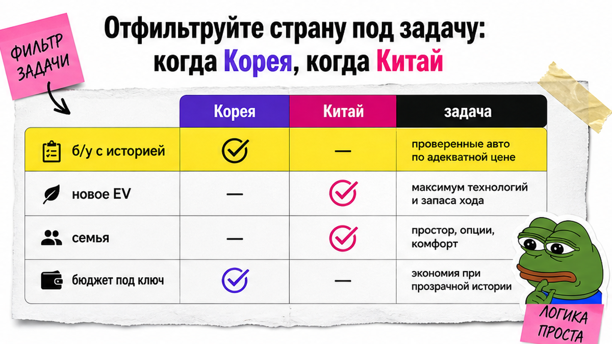
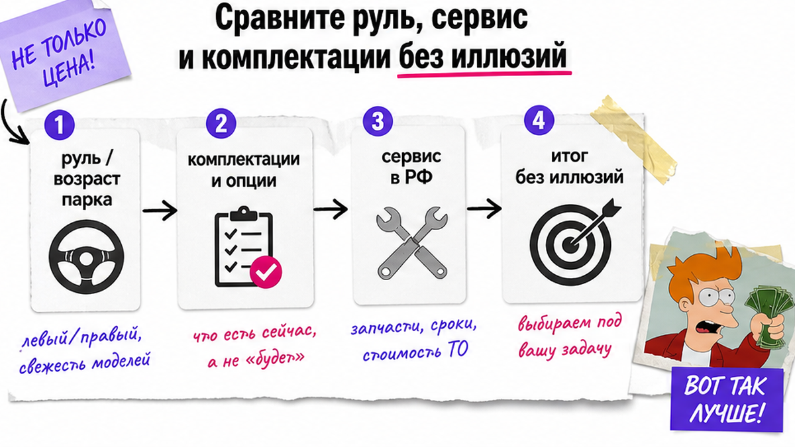
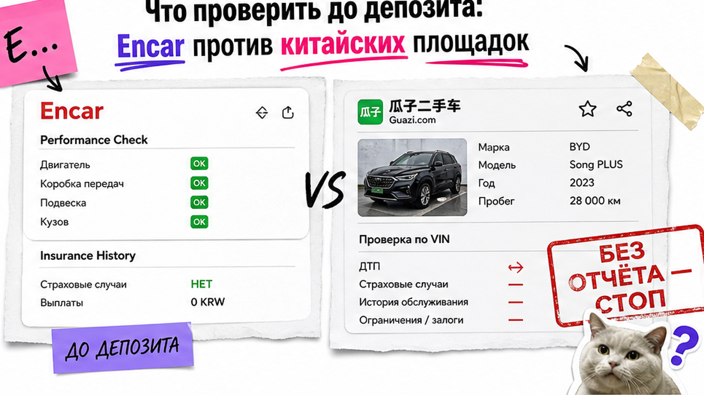

Два объявления на столе: свежий китайский кроссовер "дешевле" и корейский Tucson "дороже", а депозит уже почти ушёл. Боль новичка – не понять, с какой страны начать заказ из Азии: страшно переплатить из-за утильсбора, получить битую "красивую" машину или застрять на сроках. Страна здесь – маршрут риска и проверок, не спор брендов. Ниже фильтр задачи, сравнение Кореи и Китая и чек-лист: выберете один маршрут с тремя причинами и запросите две сметы под ключ.
TL;DR / Быстрый инсайт: Б/у с проверяемой историей и сервисом в РФ – чаще Корея (Hyundai, Kia, Genesis). Новое, электро и максимум опций за бюджет – чаще Китай (Haval, Geely, Chery, BYD). Сравнивайте смету под ключ до Владивостока и учёта, не ценник площадки. До депозита – VIN, мощность (порог 160 л.с.) и пакет проверок. Нет пакета – нет перевода.
Представьте сцену: человек почти отправил предоплату за Китай, не сверив мощность и не попросив полную смету до Владивостока. На практике в 2026 машина на 170 л.с. с более низкой ценой на площадке часто выходит дороже под ключ, чем аналог на 155 л.с. – льготный утильсбор для физлица держится только до 160 л.с. включительно. Мы в Авто-Сейлс из Владивостока ведём оба маршрута и сначала собираем факты под задачу, потом говорим про бронь.

Вопрос "авто из Китая или Кореи какие лучше" без контекста пустой. Лучше то, что закрывает задачу с меньшим риском. Запишите одно главное: ежедневная езда, семья, максимум опций, электро или перепродажа через 2–3 года.
| Критерий | Корея | Китай |
|---|---|---|
| Типичный выбор 2026 | Б/у с прозрачной историей | Новые/свежие комплектации, электро |
| Сильные стороны | Encar + Carhistory, сервис Hyundai/Kia | Оснащение, цена "железа", EV и гибриды |
| Слабое место новичка | Битый/утопленный при красивых фото | Сроки, экспортные бумаги, слабый трекинг |
| Руль | Левый | Левый |
| Когда выбирать | Нужна история и ликвидность | Нужен свежий кроссовер/EV и опции |
Сделайте: сначала фильтр задачи, потом поиск лота. Не делайте: выбирать страну "по моде" или только потому что объявление выглядит дешевле.
Вердикт по задаче: нужна проверяемая история б/у и спокойный сервис – маршрут Кореи. Нужны новое авто, электро или максимум опций в бюджете – смотрите Китай.

Оба рынка дают левый руль. Разница – в возрасте парка и обслуживании в вашем городе. Корейские Hyundai, Kia, Genesis чаще понятны сервисам в РФ. Китайские Haval, Geely, Chery, BYD берут оснащением: камеры, помощники, мультимедиа "из коробки".
Типичная ошибка – сравнивать "голую" комплектацию без запчастей и перепродажи. Например, богатый китайский кроссовер выигрывает по кнопкам, но может проиграть по сроку ожидания детали. Корейский Tucson с пробегом выглядит скромнее, зато история читается, а вторичка живее.
Сделайте: для модели выписать сервис рядом, запчасти и ликвидность. Не делайте: решать только по списку опций в объявлении.

Депозит – уже деньги в чужой стороне сделки. Пакет проверок зависит от страны. Проверьте документы до любого перевода – это снимает половину проблем новичка.
Корея. Encar – площадка объявлений и диагностики: карточка, лист состояния кузова, фото. Carhistory – официальный сервис страховой истории по VIN (на пальцах: "что страховка рассказала про выплаты"). Платный отчёт на официальной странице – 2200 вон с НДС; есть бесплатный flood-check по затоплению. База с 1996 года: ремонт без страхового обращения может не отобразиться.
Китай. Нет одного аналога Carhistory для новичка. Сверяйте экспортные документы, дату регистрации в КНР и инвойс. С 01.01.2026 для экспорта авто с регистрацией не дольше 180 дней нужно подтверждение послепродажного обслуживания от завода – без бумаги сделка встаёт.
Схема до депозита:
Задача и страна → VIN + мощность (≤160 л.с.?) → Пакет проверок (KR: Encar+Carhistory+осмотр / CN: экспорт+180 дней+инвойс) → Две сметы под ключ → Решение об оплате
Сделайте: стоп-правило "нет пакета – нет перевода". Не делайте: верить скрину "без ДТП" без VIN и даты. Избегайте давления "внеси сегодня".
Оба маршрута сходятся во Владивостоке. После выпуска нужны СБКТС (свидетельство безопасности конструкции – допуск к дорогам РФ) и действующий ЭПТС (электронный паспорт) до учёта. "Машина в порту" – ещё не "готова к номерам".
Из практики сообщества сроки из Китая часто длиннее обещаний: встречаются кейсы около 83 дней и задержки больше пяти месяцев. Корея тоже не магическая кнопка – процесс зависит от исполнителей. Закладывайте буфер и спрашивайте, кто делает СБКТС и ЭПТС.
Цепочку порт → СВХ → выпуск → СБКТС → ЭПТС для Китая разбирали отдельно: растаможка авто из Китая во Владивостоке. Здесь важнее ожидание: готовность = выпуск + документы, а не трек "прибыла".
Сделайте: просить план этапов и ответственного за документы. Не делайте: планировать отпуск "под ключи через две недели" по устному обещанию.
Ценник площадки – часть истории. В смету под ключ входят авто, логистика, таможня и оформление. Готовых сумм пошлин нет: цифры плавают, точный расчёт – под VIN и мощность в каталоге.
Обязательная сверка до предоплаты – мощность. Порог 160 л.с. для льготного утильсбора физлица – развилка бюджета. "Дешёвый" вариант на 170 л.с. часто проигрывает более скромному на 155 л.с. уже на платежах в РФ – иначе выходит слишком дорого.
Попросите две сметы под один бюджет: лот из Кореи и лот из Китая (или два лота одной страны, если фильтр ясен). В договоре смотрите этапы оплаты, состав цены и кто закрывает СБКТС/ЭПТС.
Расчёты и подбор – в каталоге avto-sales125.ru; детали по лотам – в Telegram @avtosales125. Форм на странице нет.
Сделайте: сравнивать две полные сметы. Не делайте: решать по скрину цены в вонах или юанях. Используйте одну таблицу под оба варианта.
Первый результат на сегодня – без "своих людей" и без оплаты вслепую. Этот чеклист вы сможете пройти сами за один вечер.
Критерий успеха: вы вслух называете страну и три причины, подтверждаете сверку VIN/мощности/истории до оплаты и объясняете, почему сравнивали сметы, а не витрину. Получите ясный выбор маршрута – пустой пункт означает, что депозит рано.
Сделайте: пройти список сверху вниз, потом писать заявку. Не делайте: пропускать мощность и осмотр ради "горящего" лота.
Материал проверен: Редакция Авто-Сейлс (эксперты по авто под заказ из Японии, Кореи и Китая).
Достоверность: факты сверены с официальным Carhistory, публикацией ПП РФ №1713, правилом экспорта КНР (180 дней), практикой заказов через Владивосток и материалами по растаможке на сайте Авто-Сейлс; актуальные расчёты под ключ – в каталоге.
Зависит от задачи. Нужна проверяемая история б/у и понятный сервис – чаще Корея. Нужны новое авто, электро или максимум опций за бюджет – чаще Китай. Сначала фильтр задачи, потом лоты.
Да, если до депозита закрыты VIN, мощность, Carhistory и осмотр, а смета под ключ посчитана заранее. Не начинайте с самого редкого гибрида без сервиса рядом – берите понятную модель и полный пакет проверок.
К этапам Владивостока (порт, СВХ, выпуск, СБКТС, ЭПТС) добавляется экспортный контроль в КНР, включая правило 180 дней для "свежих" регистраций. До оплаты сверяйте инвойс и подтверждения завода, если машина почти новая.
Под ключ входят логистика, таможня и оформление. Мощность выше 160 л.с. может резко изменить платежи. Сравнивайте две полные сметы, а не скрины объявлений.
Полный VIN, лист состояния Encar, отчёт Carhistory, flood-check и фото/видео осмотра. Нет пакета – не переводите деньги, даже если менеджер торопит.
Пройдите чек-лист, выберите один маршрут с тремя причинами и запросите подбор со сметой под ключ в каталоге или Telegram Авто-Сейлс. Оплата – только после пакета проверок и договора с этапами.